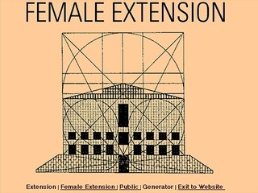
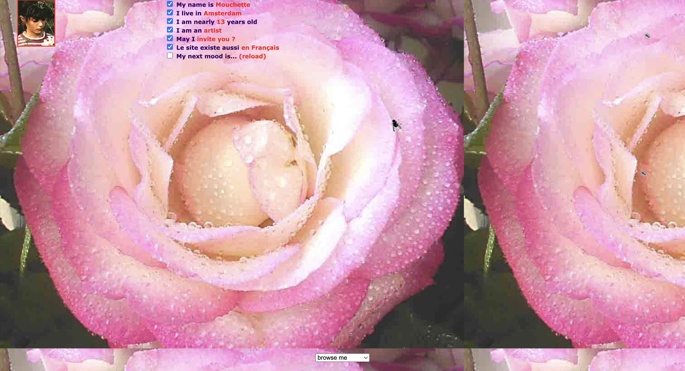

Cyberfeminist Networks: Identity, Resistance, and Networked Bodies
Curated by Thanvi Nimmala
Cyberfeminist Networks explores how feminist artists have used the internet itself as a medium to question power, identity, and authorship. Each work in this exhibition depends on networked systems to exist, demonstrating how the web can be both a site of experimentation and critique.
Cornelia Sollfrank’s Female Extension (1997) intervenes directly in online systems of authority, generating fictitious female artist identities to reveal and critique gender bias within digital and institutional networks. Martine Neddam’s Mouchette (1996–ongoing) creates an unsettling online persona that engages users in questions of anonymity, consent, and identity. VNS Matrix’s All New Gen (1993–94) presents a playful, provocative cyberfeminist vision, reclaiming early web aesthetics.
These works highlight the internet’s dual role as medium and collaborator, demonstrating how cyberfeminist net art has historically used network structures to challenge social hierarchies, redistribute authorship, and imagine alternative forms of online presence and community.

Cornelia Sollfrank — Female Extension (1997)
Sollfrank created hundreds of fictitious female artist identities and submitted them to an online jury system, exposing gender bias in digital and institutional networks. The project exists entirely because of internet-based submission processes.
More Info

Martine Neddam — Mouchette (1996–ongoing)
Mouchette presents the online persona of a teenage girl, inviting users into unsettling interactions through questions, emails, and choices. The work relies entirely on the internet’s architecture to function.
View Work

VNS Matrix — All New Gen (1993–94)
An early cyber-art game originally called "Game Girl." It challenged traditional gender-role notions by following a female/non-binary centric character in a plot that subverted patriarchal narratives.
More Info